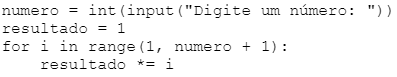
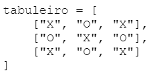
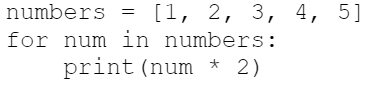

Questões de Python Resolvidas
Pergunta 1
Considere o programa em Python para calcular o fatorial de um número inteiro não negativo.
O fatorial de um número é o produto de todos os números inteiros positivos menores ou iguais a ele.
Neste contexto, analise o seguinte código em Python:

Com base no código acima, avalie as afirmações a seguir:
- ( ) O código coleta do usuário um número inteiro.
- ( ) A variável resultado é inicializada com o valor 0.
- ( ) O laço for itera sobre os números no intervalo de 1 até o número fornecido pelo usuário.
- ( ) O operador *= é usado para atribuir o valor atual da variável i.
- ( ) O código calculará corretamente o fatorial do número fornecido pelo usuário.
Resposta correta: V, F, V, F, V
Explicação:
- O código usa
input() para receber um valor do usuário.
- A variável
resultado começa com 1 e não com 0.
- O
for percorre os números de 1 até o número digitado.
- O operador
*= multiplica e atualiza o valor da variável.
- O cálculo do fatorial está correto.
resultado *= i
Pergunta 2
Foi solicitado a sua equipe um projeto de desenvolvimento de um jogo em Python.
O jogo envolve a criação de um tabuleiro onde os jogadores podem mover peças em diferentes posições.
Para representar o tabuleiro, você está utilizando uma matriz.
Analise o seguinte código em Python:

Com base no código acima, avalie as afirmações a seguir:
- ( ) O código cria uma matriz 3x3 representando o tabuleiro do jogo.
- ( ) Cada elemento da matriz representa uma posição no tabuleiro.
- ( ) A matriz tabuleiro é uma lista que contém outras listas.
- ( ) A quantidade de linhas e colunas da matriz tabuleiro é igual a 3.
- ( ) A matriz tabuleiro está sendo representada por meio de três tuplas.
Resposta correta: V, V, V, V, F
Explicação:
- O tabuleiro possui 3 linhas e 3 colunas.
- Cada posição guarda "X" ou "O".
- A estrutura é formada por listas dentro de outra lista.
- A matriz realmente é 3x3.
- Não são tuplas, porque usa colchetes [] e não parênteses ().
Pergunta 3
Analise o trecho de código abaixo da linguagem Python:

Baseado nesse trecho de código, analise as seguintes afirmações:
- I. O código cria uma lista chamada numbers com os valores de 1 a 5.
- II. O código realiza um loop infinito.
- III. A variável num contém o índice do elemento atual.
- IV. Dentro do laço, cada número da lista é multiplicado por 2.
Resposta correta: I e IV, apenas
Explicação:
- A lista possui os números de 1 até 5.
- O loop não é infinito.
num guarda o valor do elemento e não o índice.- Cada elemento é multiplicado por 2 e mostrado na tela.
Saída:
2
4
6
8
10
Pergunta 4
Analise o trecho de código abaixo da linguagem Python envolvendo o laço while.
count = 1
while count <= 5:
print(count)
count += 1
Baseado nesse trecho de código, analise as seguintes afirmações:
- I. O laço while é executado enquanto o valor de count for menor a 5.
- II. O loop será executado indefinidamente.
- III. O código define uma variável chamada count com valor inicial 1.
- IV. A variável count é incrementada em 1 a cada repetição.
Resposta correta: III e IV, apenas
Explicação:
- Existe incremento na variável.
- Por isso o loop termina normalmente.
- A variável começa em 1.
- O comando
count += 1 aumenta o valor a cada repetição.
Pergunta 5
Considerando que a linguagem Python possui como estrutura de repetição os comandos
for e while, em um código que se deseja mostrar na tela do usuário
uma sequência de números inteiros iniciando de 1 até 5 de um em um,
além do comando print com a variável i sendo inserida dentro do laço,
determine qual das alternativas corresponde à forma correta de usar a estrutura de repetição for.
- for i in range(1 to 6):
- for i in range[1, 6]
- for i = 1 to 6:
- for i in range(1, 6)
- for i in range(1, 6):
Resposta correta:
for i in range(1, 6):
print(i)
Explicação:
- O
range(1, 6) gera os números 1, 2, 3, 4 e 5.
- O número 6 não entra no intervalo.
- Os dois pontos
: são obrigatórios no Python.
- Sem os dois pontos ocorre erro de sintaxe.